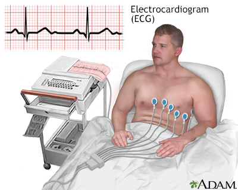
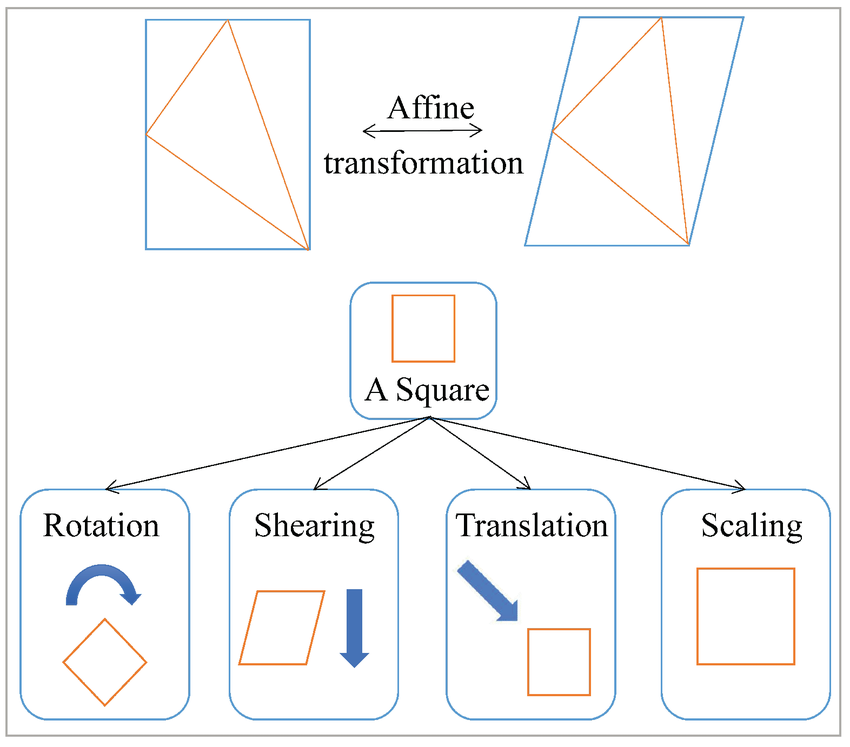
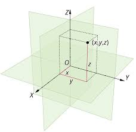
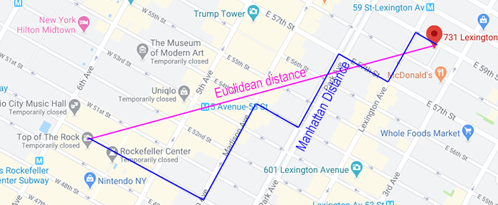
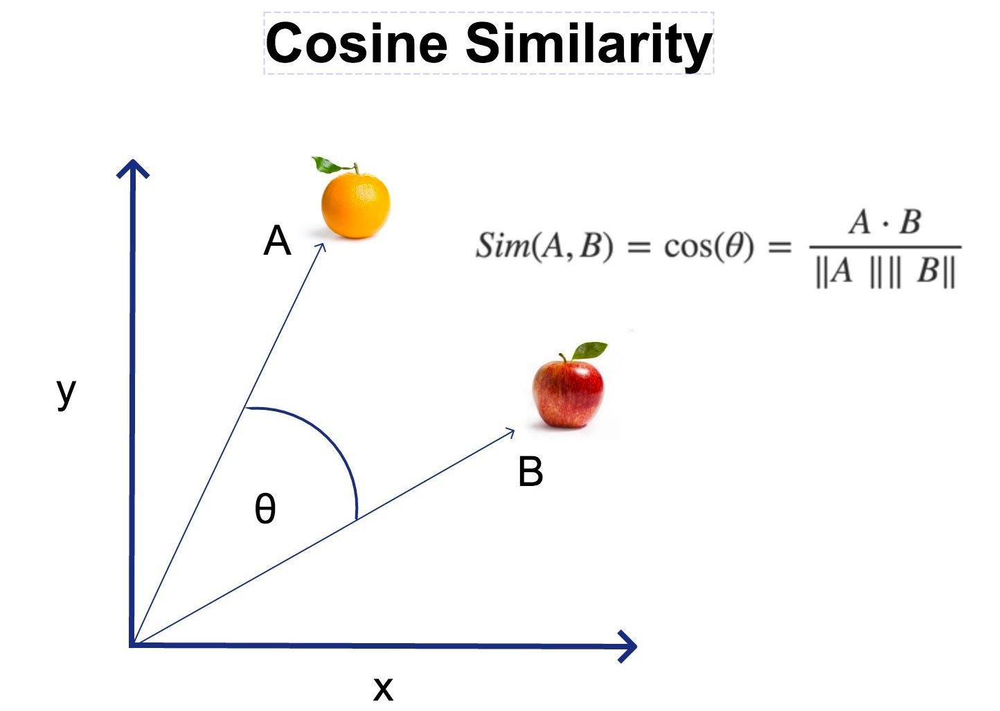
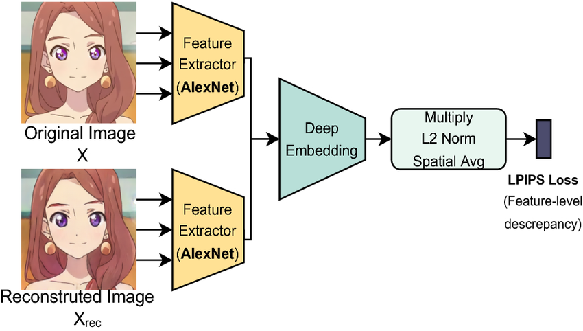
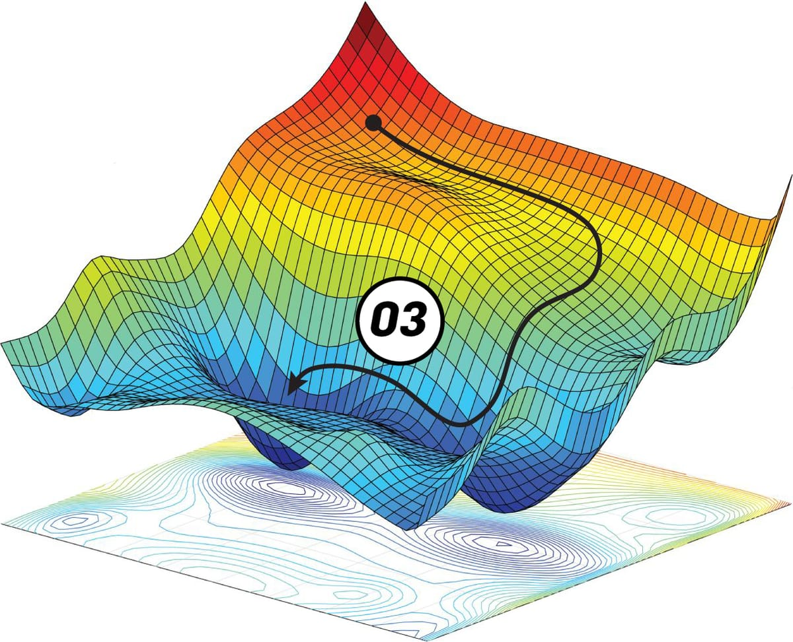
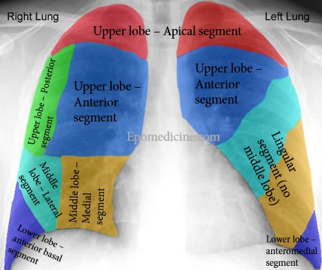

Toán học trong Trí tuệ nhân tạo
Giảng viên: Nguyễn Thùy Linh, Đào Việt Anh
Học kỳ: 2025-2026-1
Institute for AI, VNU-UET
Mục tiêu buổi học
- Hiểu vai trò nền tảng của toán học trong Trí tuệ nhân tạo
- Giới thiệu khái niệm hạt nhân: vector
- Hiểu chuỗi biểu diễn: Thế giới → Tín hiệu → Vector → Ma trận → Mô hình
- Xây dựng trực giác thông qua ví dụ đời sống và suy luận
Tại sao cần Toán học?
- Ngôn ngữ để mô tả dữ liệu và mô hình
- Công cụ phân tích, suy luận và tối ưu
- Làm sáng tỏ bản chất kết quả, không chỉ dừng ở thao tác mô hình
- Liên kết lý thuyết và thực tiễn triển khai
Nội dung chính
- Không gian vector
- Đại số tuyến tính
- Xác suất & thống kê
- Độ đo
- Giải tích
- Chu trình biểu diễn dữ liệu
- Máy tính & lưu trữ
- Cách học toán
Phần 1: Không gian Vector
Vector
- \( \vec{v} = (x, y) \) hoặc \( \vec{v} = (x, y, z) \)
- Ý nghĩa: đại diện điểm trong không gian 2D/3D
- Nhiều chiều hơn: \( \vec{v} \in \mathbb{R}^d \) (d chiều)
- Hướng của vector: từ gốc tọa độ đến điểm biểu diễn
- Độ lớn của vector: khoảng cách từ gốc tọa độ đến điểm biểu diễn
- Toàn bộ dữ liệu thường được ánh xạ thành vector để xử lý số học
GPS
- Vị trí địa lý: (50.033432, 105.12322)
- Thiết bị thu: smartphone GPS (GNSS receiver) hoặc GPS tracker (precision ~2–10 m, phụ thuộc môi trường)
- Vector 2D: $$\vec{p} = (\text{latitude}, \text{longitude})$$
- Ứng dụng: bản đồ, phân tích di chuyển, phân cụm vị trí theo vùng
- GPS:

Ảnh thành vector
- Ví dụ: ảnh 100×100 (grayscale) → vector có 10,000 chiều
- Nguồn: cảm biến CMOS/CCD trên camera
- Mỗi điểm ảnh là giá trị số (ví dụ 0–255 cho 8-bit)
- Thực tế: ảnh màu RGB 100×100 → vector 30,000 chiều (3 kênh)
Âm thanh thành vector
- Ví dụ: 1 giây ở 16 kHz → vector 16,000 chiều (mỗi sample)
- Thiết bị thu: microphone, ADC sampling (ví dụ 16-bit PCM)
- Vector tín hiệu: $$\vec{s} = (s_1, s_2, \dots, s_{16000})$$
- Tính chất: có thành phần tần số, thường xử lý bằng Fourier/FFT trước khi đưa vào mô hình
Văn bản thành vector
- Từ túi từ (BoW): đếm tần suất, ví dụ một câu → vector đếm
- Embedding (Word2Vec/BERT): vector ngữ nghĩa liên tục, kích thước điển hình 100–1024
- Ví dụ: https://huggingface.co/sentence-transformers
- Ứng dụng: phân loại, tìm kiếm ngữ nghĩa, dịch máy
Hồ sơ khách hàng
- Ví dụ: $$[age=25,\ income=15e6,\ num\_purchases=8]$$
- Nguồn thu thập: CRM, POS, cookies, forms
- Dùng cho phân cụm, dự đoán rời bỏ, cá nhân hóa
- Lưu ý: chuẩn hóa, xử lý giá trị thiếu, mã hóa
Cộng và nhân vô hướng
- Cộng vector: $$\vec{u} + \vec{v} = (u_1+v_1, u_2+v_2,\dots)$$
- Nhân vô hướng: $$a\cdot\vec{v} = (a v_1, a v_2,\dots)$$
- Ý nghĩa: ghép đặc trưng, điều chỉnh trọng số
- Ứng dụng: kết hợp embedding, nội suy dữ liệu
Vector gần nhau
- Định nghĩa: khoảng cách nhỏ theo metric → tính tương tự
- Metric thường dùng: Euclidean, Cosine, Manhattan
- Ứng dụng: tìm hàng xóm, gợi ý, tìm tài liệu tương đồng
- Lưu ý: chuẩn hóa trước khi tính cosine hoặc Euclidean
Ví dụ: gợi ý phim
- User vector (ví dụ): $$[action=0.8,\ drama=0.1,\ sci\_fi=0.6]$$
- Movie vector tương tự, dùng cosine để xếp hạng
- Dữ liệu thu: lịch sử xem, rating, thời gian, thiết bị
- Hệ gợi ý dựa trên độ giống nhau
Ví dụ: Điện tim (ECG)
- ECG 1 kênh, 1s = 1000 điểm → $$\vec{e}=(e_1,\dots,e_{1000})$$
- Thiết bị: máy ECG (tần số lấy mẫu: 250–1000 Hz)
- So sánh vector chuẩn vs hiện tại để phát hiện bất thường (arrhythmia)
- Ứng dụng: chẩn đoán sớm, giám sát liên tục
- ECG: 
Phần 2: Đại số tuyến tính
Ma trận là gì?
- Ma trận = bảng số, tập hợp vector xếp theo hàng/cột
- Ký hiệu ví dụ:
$$
A = \begin{bmatrix}
a_{11} & a_{12} \\
a_{21} & a_{22}
\end{bmatrix}
$$
- Chứa thông tin về mối quan hệ giữa đặc trưng/mẫu
Dataset = ma trận
- Dạng: $$X \in \mathbb{R}^{N \times D}$$ (N mẫu, D đặc trưng)
- Ví dụ: 1000 khách × 20 thuộc tính → ma trận 1000×20
- Hàng = mẫu (vector), cột = đặc trưng
- Tiền xử lý: chuẩn hóa, thay thế các giá trị lỗi, phân loại theo nhãn
Biến đổi tuyến tính
- Dạng cơ bản: $$\vec{y} = A \vec{x}$$
- Các phép biến đổi: xoay, phóng to/thu nhỏ, chiếu
- Ý nghĩa: chuyển không gian biểu diễn (feature transform)
- Ứng dụng: tiền xử lý, làm giàu dữ liệu
- Biến đổi tuyến tính: 
Ví dụ: xoay ảnh
- Xoay (rotation) là phép biến đổi tuyến tính trên tọa độ pixel (trong không gian liên tục)
- Ma trận xoay 2D:
$$
R(\theta)=\begin{bmatrix}\cos\theta & -\sin\theta\\[4pt]\sin\theta &
\cos\theta\end{bmatrix}
$$
- Dùng nội suy khi áp dụng lên ảnh
- Ứng dụng: làm giàu dữ liệu cho huấn luyện
Chiếu dữ liệu
- Chiếu xuống không gian con để giảm chiều (dimensionality reduction)
- Ví dụ: chiếu lên trục chính trong PCA - Phân tích thành phần cơ bản
- Lợi ích: giảm nhiễu, tiết kiệm tính toán
- Cân nhắc: mất mát thông tin nếu chiều giảm quá mạnh
Véc tơ riêng, giá trị riêng
- Định nghĩa: $$A\vec{v} = \lambda \vec{v}$$
- Véc tơ riêng = hướng bất biến của biến đổi tuyến tính
- Giá trị riêng = tỉ lệ phóng to/thu nhỏ theo hướng đó
- Ứng dụng: PCA - Phân tích thành phần cơ bản
PCA: phân tích thành phần chính
- Tìm hướng có phương sai lớn nhất (principal components)
- Thực hiện bằng cách lấy véc tơ riêng của ma trận hiệp phương sai:
$$\Sigma = \frac{1}{N-1} X^\top X$$ (sau khi mean-centered)
- Giữ k thành phần hàng đầu để nén dữ liệu
- Ứng dụng: nén ảnh, trực quan hóa (t-SNE/UMAP sau PCA)
Ứng dụng PCA: nén ảnh
- Ảnh 100×100 (10k dim) → PCA giữ 200 PC → giảm kích thước lưu trữ nhiều lần
- Lỗi nén đo bằng MSE hoặc PSNR
- Lưu ý: nén làm mất chi tiết nhỏ
Ứng dụng PCA: phát hiện bất thường
- Xây dựng không gian "bình thường" bằng PCA; mẫu bất thường chiếu lên không gian này có sai số lớn
- Cách làm: huấn luyện PCA trên dữ liệu bình thường → dùng sai số tái tạo làm điểm số đánh giá bất thường
- Ứng dụng: phát hiện gian lận, lỗi máy móc, ngoại lệ trong dữ liệu cảm biến
Kịch bản bán lẻ
- Ma trận user×item ratings: $$R \in \mathbb{R}^{U\times I}$$
- Dùng factorization (SVD, NMF) để học các đặc trưng ẩn
- Ứng dụng: gợi ý sản phẩm, phát hiện nhóm khách hàng (cohort)
- Lưu ý: dữ liệu thưa
Ma trận trong hệ gợi ý
- Dạng: user×item, giá trị = rating/phản hồi nội tại
- Factorization ví dụ: $$R \approx U V^\top$$ với $$U\in\mathbb{R}^{U\times k},\ V\in\mathbb{R}^{I\times k}$$
- Ý nghĩa: tìm embedding cho user & item
- Ứng dụng: xếp hạng cá nhân, hệ tư vấn
Phần 3: Xác suất & Thống kê
Xác suất
- Đo mức độ tin cậy của biến cố (giá trị trong [0,1])
- Công thức cơ bản: $$P(A)=\frac{|A|}{|S|}$$ (trong mẫu rời rạc đơn giản)
- Ý nghĩa: mô hình hóa sự không chắc chắn, dự đoán có độ tin cậy
- Ứng dụng: mô hình Bayesian, mô hình xác suất
Vector xác suất
- Phân phối rời rạc biểu diễn dưới dạng vector:
- Ví dụ: xúc xắc công bằng:
- Sử dụng trong phân lớp (softmax)
- Lưu ý: tính ổn định số học (log-softmax)
Thống kê mô tả
- Mean (trung bình), median (trung vị), variance (phương sai)
- Ví dụ: trung bình của mẫu $$\bar{x}=\frac{1}{N}\sum_i x_i$$
- Biểu diễn đặc trưng chung của dữ liệu, kiểm tra phân phối
- Ứng dụng: EDA (exploratory data analysis)
Hiệp phương sai (covariance)
- Công thức: $$\mathrm{Cov}(X,Y)=E[(X-\mu_X)(Y-\mu_Y)]$$
- Ma trận hiệp phương sai: $$\Sigma = E[(X-\mu)(X-\mu)^\top]$$
- Biểu diễn mối tương quan tuyến tính giữa các đặc trưng
- Ứng dụng: PCA, multivariate analysis
Kịch bản: A/B testing
- So sánh hai giao diện A/B dựa trên metric (CTR, conversion)
- Sử dụng thống kê kiểm định (t-test, chi-square) để khẳng định khác biệt có ý nghĩa
- Lưu ý: p-hacking, đa kiểm thử
- Ứng dụng: Kiểm thử sản phẩm
Suy luận mẫu → tổng thể
- Mẫu phải đại diện; sử dụng khoảng tin cậy để ước lượng
- Ví dụ: 95% CI cho mean: $$\bar{x} \pm t_{0.975}\cdot\frac{s}{\sqrt{n}}$$
- Kiểm soát bias & variance trong ước lượng
- Ứng dụng: báo cáo kết quả nghiên cứu, phân tích chính sách
Ứng dụng y tế
- Thiết kế thử nghiệm lâm sàng, so sánh thuốc/placebo
- Sử dụng các kiểm thử (ANOVA, phân tích khả năng sống sót) để đánh giá hiệu quả
- Quan trọng: vấn đề đạo đức, kích thước mẫu, độ ngẫu nhiên
- Dữ liệu y tế: thường có giá trị trống, bị kiểm duyệt
Phần 4: Không gian Metric
Euclidean
- Khoảng cách thẳng giữa 2 điểm:
- Phù hợp khi mở rộng các chiều cùng đơn vị và đã chuẩn hóa
- Ứng dụng: k-NN, phân cụm (K-means)
- Ví dụ: tọa độ GPS (lat,lon) cần chuyển về meters trước khi dùng Euclidean
- Không gian euclide: 
Manhattan
- Khoảng cách đường phố / city-block:
- Thường dùng khi các biến độc lập và có độ rời rạc
- Ứng dụng: chỉ đường, phân cụm nhạy với outliers
- Lưu ý: khác biệt với Euclidean về hình dạng
- Khoảng cách manhattan: 
Cosine similarity
- Đo hướng giữa vector:
- Giá trị trong [-1,1], thường dùng cho text embeddings và gợi ý
- Không phụ thuộc độ lớn → tốt khi chỉ quan tâm hướng/ngữ nghĩa
- Lưu ý: chuẩn hóa embedding để ổn định tính toán
- Khoảng cách cosine: 
Kịch bản: gợi ý bài hát
- Song embedding từ đặc trưng âm thanh (tempo, timbre) hoặc phản hồi từ người dùng
- Tính độ giống nhau giữa user vector và track vector
- độ đo chọn phụ thuộc dữ liệu: cosine cho embedding, Euclidean cho đặc trưng
Chọn độ đo phù hợp
- Xem tính chất dữ liệu: tỷ lệ, độ thưa, hướng và độ lớn
- Thử nghiệm: chọn độ đo qua kiểm duyệt
- Đôi khi chuyển đổi (log, chuẩn hóa) làm độ đo phù hợp hơn
So sánh hình ảnh
- So sánh bằng pixel-wise Euclidean có thể nhạy với nhiễu
- Feature-based (deep embedding) + cosine thường cho kết quả tốt hơn
- Dùng perceptual losses (LPIPS) cho độ đo gần với cảm nhận con người
- LPIPS đo độ tương đồng cảm nhận: 
Phần 5: Giải tích trong Trí tuệ nhân tạo
Đạo hàm
- Đo tốc độ thay đổi của hàm số.
- Trong học máy: mô tả cách hàm thất thoát thay đổi khi thay đổi tham số.
- Ví dụ: \( f(x) = x^2 \Rightarrow f'(x) = 2x \). Với \(x=3\), tốc độ thay đổi = 6.
- Độ dốc trên một mặt hyperplane:

Gradient
- Đạo hàm bậc nhất theo nhiều biến.
- Cho biết hướng tăng/giảm mạnh nhất của hàm.
- Ví dụ: \( f(x,y) = x^2 + y^2 \Rightarrow \nabla f = (2x, 2y) \). Với (2,3) → (4,6).
- Qúa trình đi theo chiều giảm của gradient: 
Tích phân
- Tính diện tích dưới đường cong.
- Dùng trong AI để tính kỳ vọng, xác suất, diện tích phân phối.
- Ví dụ: \( \int_0^1 x^2 dx = \frac{1}{3} \). → Xác suất biến ngẫu nhiên trong [0,1].
- Tích phân:

Tối ưu hoá
- Kết hợp đạo hàm + gradient để tìm cực tiểu/cực đại.
- Ứng dụng: huấn luyện mạng nơ-ron dùng gradient descent.
- Ví dụ: cập nhật tham số \( w \leftarrow w - \eta \cdot \nabla L(w) \).
- Gỉa sử hàm thất thoát có đồ thị như hình - mục tiêu tìm vị trí tại đó hàm thất thoát nhỏ nhất - quá trình này gọi là tối ưu hóa:

Phần 6: Chu trình biểu diễn dữ liệu
Thế giới → Tín hiệu
- Thiết bị thu nhận hiện tượng vật lý: camera (ánh sáng), mic (âm), GPS (vị trí), LiDAR ( đám mây điểm)
- Ví dụ: camera CCD/CMOS nhận photon → điện tích → tín hiệu analog
- Ví dụ: LiDAR: phát xung laser, đo thời gian di chuyển → tọa độ điểm (x,y,z) ví dụ: [12.34, -3.21, 1.05] (m)
- CMOS:

Tín hiệu → Số hóa (ADC)
- ADC (Analog-to-Digital Converter) lấy mẫu & lượng tử hóa: ví dụ 12-bit, 16-bit
- Ảnh: tín hiệu thô từ cảm biến → giá trị integer 0–(2^b -1) (ví dụ 0–255 cho 8-bit)
- Âm thanh: tần số lấy mẫu (16kHz, 44.1kHz) + độ rộng bit (16-bit)
- Lưu ý nhiễu, giả tượng (artifact), aliasing → cần anti-aliasing filter
- Aliasing:
Số hóa → Vector
- Ghép các giá trị mẫu thành vector: ảnh flatten → vector 1 chiều, âm thanh thành vector chuỗi thời gian
- Ví dụ: ảnh 224×224×3 → vector length 150,528; thường reshape thành tensor $$H\times W \times C$$ trước khi xử lý
- Thực hiện chuẩn hóa (min-max, z-score) hoặc tăng cường (crop, flip)
- Lưu trữ dưới dạng mảng (NumPy, tensors), hoặc dạng nhị phân (TFRecord, HDF5)
Vector → Tập dữ liệu
- Tập hợp nhiều vector xếp thành ma trận/Tập dữ liệu: $$X\in\mathbb{R}^{N\times D}$$
- Ví dụ: 1000 ảnh mèo → Tập dữ liệu kích thước 1000×150528 (nên dùng theo lô - batch)
- Chia train/val/test, cân bằng lớp, xử lý imbalance (oversampling/weighting)
- Metadata (time, sensor id, geolocation) gắn kèm để traceability
Tập dữ liệu → Mô hình
- Lựa chọn mô hình theo bài toán: CNN (ảnh), RNN/Transformer (chuỗi/ngôn ngữ), PointNet (point cloud)
- Huấn luyện: tối ưu hàm thất thoát, validation, early stopping, hyperparameter tuning
- Đầu ra mô hình: vector xác suất (softmax), regression scalar, embedding vector
- Triển khai: lượng tử hóa, cắt tỉa, xử lý theo lô, giám sát
Kịch bản: ảnh y tế (chi tiết từng bước)
- Thế giới → tín hiệu: máy chụp (X-ray/CT) tạo tín hiệu điện → DICOM raw
- Số hóa: Máy scan ADC, lưu độ xuyên thấu (ví dụ 12–16 bit)
- Số hóa → vector: cắt/đổi kích thước, chuẩn hóa; 512×512 DICOM → tensor 512×512
- Vector → Tập dữ liệu: gán nhãn (radiologist annotation), tăng cường (rotate, flip)
- Tập dữ liệu → mô hình: huấn luyện CNN (phân đoạn/phân lớp), kiểm nghiệm bằng độ đo (AUC, Dice)
- phân đoạn ảnh Xray: 
Kịch bản: xe tự lái (chi tiết)
- Cảm biến: camera (ảnh), LiDAR (đám mây điểm), radar, IMU, GPS
- đám mây điểm LiDAR → matrix $$P\in\mathbb{R}^{N\times 3}$$ (N points, each (x,y,z)), ví dụ điểm: [12.34, -3.21, 1.05] (meters)
- Tổng hợp: đồng bộ hóa nhãn thời gian, chuyển đổi tọa độ (extrinsics/intrinsics) → tạo tập đặc trưng
- Mô hình: perception (object detection/tracking), lập kế hoạch, điều khiển; huấn luyện
Kịch bản: dịch máy (chi tiết)
- Thế giới → tín hiệu: văn bản nhập từ bàn phím hoặc microphone (speech→text)
- Số hóa: tokenization (subword/BPE), tạo chuỗi token ids
- Số hóa → vector: tìm kiếm embedding $$E\in\mathbb{R}^{V\times d}$$ (V vocab size)
- Vector → Tập dữ liệu: tạo cặp (src, tgt) cho huấn luyện có giám sát
- Tập dữ liệu → model: Transformer huấn luyện, triển khai với beam search
Phần 7: Máy tính & lưu trữ
Máy tính hiểu 0/1
- Tất cả dữ liệu cuối cùng lưu dưới dạng bit (0/1)
- Vector/ma trận → chuỗi số nguyên/float được mã hóa thành bit trong RAM/disk
- Biểu diễn: float32, float16, int8 (quantized)
Vector/ma trận trong RAM
- Ma trận lớn lưu dưới dạng mảng liên tục (row-major/col-major)
- Hiệu năng phụ thuộc kiểu bộ nhớ & cache cục bộ
- Dùng lô để tận dụng các phép toán trên vector (SIMD)
- Lưu trữ lớn: memory map (memmap), out-of-core pipelines
- RAM:

Tối ưu phần cứng: GPU/TPU
- GPU/TPU xử lý song song hàng nghìn phép toán trên vector/matrix
- Thư viện: BLAS, cuBLAS, cuDNN, XLA (TPU)
- Kỹ thuật: mixed precision (fp16), tensor cores, CUDA streams
- Ứng dụng: huấn luyện deep networks, triển khai tốc độ cao
- GPU:

Từ Excel đến Big Data
- Excel/CSV đủ cho EDA nhỏ; Big Data cần Spark/BigQuery/Hadoop
- Data pipelines: ETL, streaming (Kafka), batch processing
- Lưu trữ: cơ sở dữ liệu quan hệ, NoSQL, object storage (S3)
- Quản lý metadata: data catalog, lineage để có thể truy vết
- Hadoop:

Huấn luyện mô hình lớn
- Cần huấn luyện phân tán (data-parallel, model-parallel) và điều phối tập trung (Horovod, PyTorch DDP)
- Vấn đề: Giao tiếp, đồng bộ gradient
- Kỹ thuật: checkpointing, gradient accumulation, sharding optimizer state
- Monitoring: tham số huấn luyện, phát hiện lỗi khi triển khai
- Pytorch:

Phần 8: Cách học Toán hiệu quả
Nguyên tắc học
- Bắt đầu từ trực giác và ví dụ.
- Kết nối lý thuyết với vector và dữ liệu thực tế.
- Luyện tập qua coding: NumPy, PyTorch.
- Tích hợp nhiều giác quan: hình ảnh, âm thanh, văn bản.
Chia để trị
- Giải bài tập: chia nhỏ vấn đề
- Tìm hiểu lí do sau mỗi công thức
- Sử dụng công cụ hỗ trợ
Tổng kết
- Vector = hạt nhân dữ liệu; biểu diễn mọi kiểu dữ liệu dưới dạng số
- Đại số tuyến tính = ngôn ngữ biến đổi dữ liệu (ma trận, eigen, PCA)
- Xác suất & thống kê = mô hình hóa bất định, kiểm định, suy luận
- Metric = đo sự giống nhau; chọn metric phù hợp với dữ liệu
- Giải tích = công cụ tối ưu mô hình.
- Chu trình rút gọn: Thế giới → Tín hiệu → Số hóa → Vector → Dataset → Mô hình
- Học toán hiệu quả = Chủ động, Kiên nhẫn, Lập kế hoạch, Tư tưởng chia để trị.
- Without mathematics, there's nothing you can do. Everything around you is mathematics. Everything around you is numbers.
Đọc thêm
- Gilbert Strang — *Introduction to Linear Algebra*
- Hastie, Tibshirani, Friedman — *The Elements of Statistical Learning*
- scikit-learn tutorials, PCA tutorials, hands-on guides
Q&A
- Thảo luận ví dụ thực tế